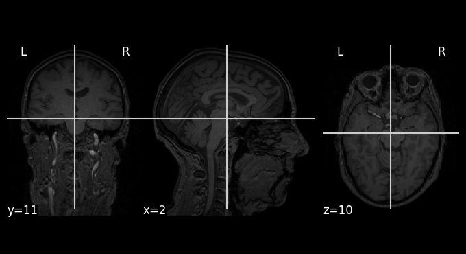
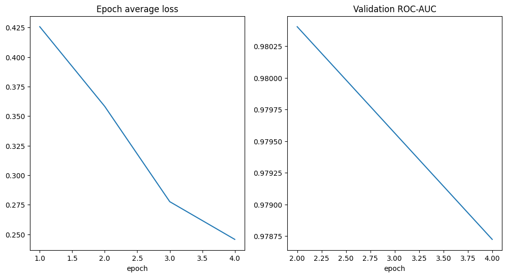

3D MRI classification#
Second half of the seminar. Last time we classified sex from FreeSurfer tables - hand-crafted morphometry features. Now we throw the raw 3D volume at a convolutional net and let it find its own features. Same target (male/female), completely different modelling philosophy.
Data is the IXI dataset: ~600 T1-weighted brains from three London hospitals, in NIfTI. Released under CC BY-SA 3.0 - if you use it anywhere, cite the IXI website.
A fair warning up front: this notebook downloads ~4.5 GB and trains a 3D CNN. On a Colab GPU it’s fine; on CPU it will crawl. Make sure Runtime -> Change runtime type -> GPU is set before you run anything heavy.
Local setup - Python 3.12#
This notebook is configured for CPython 3.12. A GPU is strongly recommended: the 3D DenseNet can run on a CPU, but training will be very slow.
You are strongly recommended to use Google Colab runtime.
Keep this notebook and requirements.txt in the same directory. Create a dedicated virtual environment before opening the notebook.
1. Create and activate the environment#
macOS or Linux
python3.12 --version
python3.12 -m venv .venv
source .venv/bin/activate
python -m pip install --upgrade pip setuptools wheel
python -m pip install -r requirements.txt
python -m ipykernel install --user \
--name classification-3d-py312 \
--display-name "Python 3.12 (3D classification)"
jupyter lab
Windows PowerShell
py -3.12 --version
py -3.12 -m venv .venv
.\.venv\Scripts\Activate.ps1
python -m pip install --upgrade pip setuptools wheel
python -m pip install -r requirements_3d_classification_python312.txt
python -m ipykernel install --user `
--name classification-3d-py312 `
--display-name "Python 3.12 (3D classification)"
jupyter lab
After Jupyter opens, select Kernel -> Change Kernel -> Python 3.12 (3D classification).
The requirements file installs the standard PyPI build of PyTorch. For an NVIDIA CUDA-specific build, install the appropriate PyTorch wheel for your CUDA version first, then install the remaining requirements. The exact command depends on the operating system, CUDA toolkit, and GPU driver.
Imports. pandas/numpy for the tabular side, torch for the network, and monai — think of it as torch with a lot of medical-imaging conveniences bolted on (readers, transforms, ready-made 3D architectures).
# For Colab runtime run this cell
# !pip install -q "monai[nibabel,tqdm]==1.3.2"
import logging, os, sys, shutil, tempfile
from glob import glob
import numpy as np
import pandas as pd
import matplotlib.pyplot as plt
import torch
from torch.utils.tensorboard import SummaryWriter
import monai
from monai.utils.misc import set_determinism
from monai.apps import download_and_extract
from monai.config import print_config
from monai.data import DataLoader, ImageDataset
from monai.metrics import ROCAUCMetric
from monai.transforms import (
EnsureChannelFirst, Compose, RandRotate90, Resize, ScaleIntensity,
)
device = torch.device("cuda" if torch.cuda.is_available() else "cpu")
pin_memory = torch.cuda.is_available()
if device.type != "cuda":
print("WARNING: no GPU visible - training will be extremely slow. \
Switch the runtime to GPU.")
logging.basicConfig(stream=sys.stdout, level=logging.INFO)
print_config()
MONAI version: 1.3.2
Numpy version: 1.26.4
Pytorch version: 2.5.1+cu124
MONAI flags: HAS_EXT = False, USE_COMPILED = False, USE_META_DICT = False
MONAI rev id: 59a7211070538586369afd4a01eca0a7fe2e742e
MONAI __file__: /workspace/seminar5_neuroml/3d_classification/.venv/lib/python3.12/site-packages/monai/__init__.py
Optional dependencies:
Pytorch Ignite version: NOT INSTALLED or UNKNOWN VERSION.
ITK version: NOT INSTALLED or UNKNOWN VERSION.
Nibabel version: 5.4.2
scikit-image version: NOT INSTALLED or UNKNOWN VERSION.
scipy version: 1.15.1
Pillow version: 12.3.0
Tensorboard version: 2.18.0
gdown version: NOT INSTALLED or UNKNOWN VERSION.
TorchVision version: NOT INSTALLED or UNKNOWN VERSION.
tqdm version: 4.70.0
lmdb version: NOT INSTALLED or UNKNOWN VERSION.
psutil version: 7.2.2
pandas version: 2.2.3
einops version: NOT INSTALLED or UNKNOWN VERSION.
transformers version: NOT INSTALLED or UNKNOWN VERSION.
mlflow version: NOT INSTALLED or UNKNOWN VERSION.
pynrrd version: NOT INSTALLED or UNKNOWN VERSION.
clearml version: NOT INSTALLED or UNKNOWN VERSION.
For details about installing the optional dependencies, please visit:
https://docs.monai.io/en/latest/installation.html#installing-the-recommended-dependencies
Fix the seeds so reruns match.
set_determinism(seed=42)
Getting the data#
directory = "classification"
root_dir = tempfile.mkdtemp(prefix="classification_") if directory is None else os.path.abspath(directory)
os.makedirs(root_dir, exist_ok=True)
print(f"Working directory: {root_dir}")
Working directory: /workspace/seminar5_neuroml/3d_classification/classification
Download data, namely ixi.tar and IXI.xls files, from https://cloud.appliedai.tech/s/6wXEsjEiJJLRyyA?path=%2FSeminar 5%2F3d_classification.
Place the files into the Working directory (root_dir).
Navigate into the Working directory and run:
mkdir ixi
tar -xf ixi.tar -C ixi
for entry in sorted(os.listdir(root_dir)):
print(entry)
IXI.xls
ixi
ixi.tar
Quick sanity-check that the volumes actually loaded, by plotting one. nilearn gives us the standard three-plane anatomical view basically for free.
import nilearn
from nilearn import plotting
img = nilearn.image.load_img(glob(f'{root_dir}/ixi/*')[0])
plotting.plot_anat(img)
/workspace/seminar5_neuroml/3d_classification/.venv/lib/python3.12/site-packages/nilearn/image/resampling.py:867: UserWarning: Casting data from int32 to float32
return resample_img(
<nilearn.plotting.displays._slicers.OrthoSlicer at 0x7f88e0298290>

Matching images to labels#
The demographics live in a spreadsheet, the images in a folder, and we need to line them up by subject id. A couple of gotchas:
not every scan has a demographics row (and vice versa), so we intersect the two,
ids repeat in the spreadsheet, so we drop duplicates,
order matters: the labels array has to line up with the images list element-for-element, so after filtering we sort both the same way.
The label map: IXI codes sex as 1=male, 2=female. We remap to 1=male, 0=female so it’s a clean binary target.
df = pd.read_excel(f"{root_dir}/IXI.xls")
df.head()
| IXI_ID | SEX_ID (1=m, 2=f) | HEIGHT | WEIGHT | ETHNIC_ID | MARITAL_ID | OCCUPATION_ID | QUALIFICATION_ID | DOB | DATE_AVAILABLE | STUDY_DATE | AGE | |
|---|---|---|---|---|---|---|---|---|---|---|---|---|
| 0 | 1 | 1 | 170 | 80 | 2 | 3 | 5 | 2 | 1968-02-22 | 0 | NaT | NaN |
| 1 | 2 | 2 | 164 | 58 | 1 | 4 | 1 | 5 | 1970-01-30 | 1 | 2005-11-18 | 35.800137 |
| 2 | 12 | 1 | 175 | 70 | 1 | 2 | 1 | 5 | 1966-08-20 | 1 | 2005-06-01 | 38.781656 |
| 3 | 13 | 1 | 182 | 70 | 1 | 2 | 1 | 5 | 1958-09-15 | 1 | 2005-06-01 | 46.710472 |
| 4 | 14 | 2 | 163 | 65 | 1 | 4 | 1 | 5 | 1971-03-15 | 1 | 2005-06-09 | 34.236824 |
# subject id is the number embedded in the filename: IXI423-IOP-0974-T1.nii.gz -> 423
def id_from_path(p):
return int(os.path.basename(p).split('-')[0][3:])
image_paths = glob(f'{root_dir}/ixi/*')
ids = [id_from_path(p) for p in image_paths]
# keep only subjects present in both, drop duplicate rows
df = df[df.IXI_ID.isin(ids)].drop_duplicates(subset=['IXI_ID'])
df['SEX_ID (1=m, 2=f)'] = df['SEX_ID (1=m, 2=f)'].map({1: 1, 2: 0}) # m=1, f=0
# build images + labels TOGETHER, in one shared order, straight off the dataframe.
# (going through df keeps the two perfectly aligned - no separate sort to drift out of sync)
id_to_path = {id_from_path(p): p for p in image_paths}
df = df[df.IXI_ID.isin(id_to_path)]
images = [id_to_path[i] for i in df.IXI_ID.values]
labels = df['SEX_ID (1=m, 2=f)'].values
# guard: if these ever drift apart, everything downstream is silently wrong
assert len(images) == len(labels), (len(images), len(labels))
len(images), len(labels)
(566, 566)
Peek at a few pairs to confirm the image-label alignment looks sane.
list(zip([os.path.basename(i) for i in images[:5]], labels[:5]))
[('IXI002-Guys-0828-T1.nii.gz', 0),
('IXI012-HH-1211-T1.nii.gz', 1),
('IXI013-HH-1212-T1.nii.gz', 1),
('IXI014-HH-1236-T1.nii.gz', 0),
('IXI015-HH-1258-T1.nii.gz', 1)]
Datasets, transforms, and a proper split#
Preprocessing per volume:
ScaleIntensity - MRI voxel values aren’t standardized the way 0-255 photos are; they drift between scanners. Rescale each volume to [0,1] so one bright scan doesn’t dominate.
EnsureChannelFirst - add the channel dim the network expects.
Resize to 96³ - uniform shape, and small enough to actually train in a seminar.
RandRotate90 (train only) - cheap augmentation. We deliberately leave it off for val/test so evaluation is deterministic.
from sklearn.model_selection import train_test_split
idx = np.arange(len(images))
train_idx, tmp_idx = train_test_split(idx, test_size=0.30, stratify=labels, random_state=0)
val_idx, test_idx = train_test_split(tmp_idx, test_size=0.50, stratify=labels[tmp_idx], random_state=0)
def subset(indices):
return [images[i] for i in indices], labels[indices]
train_x, train_y = subset(train_idx)
val_x, val_y = subset(val_idx)
test_x, test_y = subset(test_idx)
# sanity: no subject id appears in more than one split
assert not (set(map(id_from_path, train_x)) & set(map(id_from_path, val_x)))
assert not (set(map(id_from_path, train_x)) & set(map(id_from_path, test_x)))
print(f"train {len(train_x)} | val {len(val_x)} | test {len(test_x)}")
train 396 | val 85 | test 85
train_transforms = Compose([
ScaleIntensity(), EnsureChannelFirst(), Resize((96, 96, 96)), RandRotate90()
])
val_transforms = Compose([
ScaleIntensity(), EnsureChannelFirst(), Resize((96, 96, 96))
])
train_ds = ImageDataset(image_files=train_x, labels=train_y, transform=train_transforms)
val_ds = ImageDataset(image_files=val_x, labels=val_y, transform=val_transforms)
test_ds = ImageDataset(image_files=test_x, labels=test_y, transform=val_transforms)
num_workers = 0 if os.name == "nt" else 2
train_loader = DataLoader(train_ds, batch_size=4, shuffle=True, num_workers=num_workers, pin_memory=pin_memory)
val_loader = DataLoader(val_ds, batch_size=4, num_workers=num_workers, pin_memory=pin_memory)
test_loader = DataLoader(test_ds, batch_size=4, num_workers=num_workers, pin_memory=pin_memory)
# peek at one batch to confirm shapes: (B, C, 96, 96, 96)
im, lb = monai.utils.misc.first(train_loader)
print(type(im).__name__, im.shape, lb)
MetaTensor torch.Size([4, 1, 96, 96, 96]) tensor([0, 1, 0, 0])
Network, loss, optimizer#
DenseNet121 in its 3D form, straight from MONAI. Two output logits (female/male), cross-entropy loss, Adam.
max_epochs = 4 keeps it seminar-sized. That’s not enough to squeeze the dataset - expect a decent-but-not-amazing number. Bump it to ~10 at home and it climbs a lot. We validate every couple of epochs and keep the best checkpoint.
model = monai.networks.nets.DenseNet121(spatial_dims=3, in_channels=1, out_channels=2).to(device)
loss_function = torch.nn.CrossEntropyLoss()
optimizer = torch.optim.Adam(model.parameters(), 1e-4)
auc_metric = ROCAUCMetric()
max_epochs = 4
val_interval = 2
ckpt_path = "best_metric_model_classification3d_array.pth"
Training#
TensorBoard, if you want the live curves. Harmless to skip.
%load_ext tensorboard
%tensorboard --logdir runs
ERROR: Failed to launch TensorBoard (exited with 1).
Contents of stderr:
Traceback (most recent call last):
File "/workspace/seminar5_neuroml/3d_classification/.venv/bin/tensorboard", line 3, in <module>
from tensorboard.main import run_main
File "/workspace/seminar5_neuroml/3d_classification/.venv/lib/python3.12/site-packages/tensorboard/main.py", line 27, in <module>
from tensorboard import default
File "/workspace/seminar5_neuroml/3d_classification/.venv/lib/python3.12/site-packages/tensorboard/default.py", line 30, in <module>
import pkg_resources
ModuleNotFoundError: No module named 'pkg_resources'
Standard PyTorch loop.
writer = SummaryWriter()
best_metric, best_metric_epoch = -1.0, -1
epoch_loss_values, metric_values = [], []
saved_ckpt = False
for epoch in range(max_epochs):
print("-" * 10)
print(f"epoch {epoch + 1}/{max_epochs}")
model.train()
epoch_loss, step = 0.0, 0
for batch_data in train_loader:
step += 1
inputs, lbls = batch_data[0].to(device), batch_data[1].to(device)
optimizer.zero_grad()
outputs = model(inputs)
loss = loss_function(outputs, lbls)
loss.backward()
optimizer.step()
epoch_loss += loss.item()
epoch_len = len(train_ds) // train_loader.batch_size
print(f"{step}/{epoch_len}, train_loss: {loss.item():.4f}")
writer.add_scalar("train_loss", loss.item(), epoch_len * epoch + step)
epoch_loss /= step
epoch_loss_values.append(epoch_loss)
print(f"epoch {epoch + 1} average loss: {epoch_loss:.4f}")
if (epoch + 1) % val_interval == 0:
model.eval()
probs, trues = [], []
with torch.no_grad():
for val_data in val_loader:
vx, vy = val_data[0].to(device), val_data[1].to(device)
logits = model(vx)
probs.append(torch.softmax(logits, dim=1)[:, 1].cpu())
trues.append(vy.cpu())
probs = torch.cat(probs)
trues = torch.cat(trues)
auc_metric.reset()
auc_metric(probs.unsqueeze(1), trues.unsqueeze(1))
auc = auc_metric.aggregate()
acc = ((probs > 0.5).long() == trues).float().mean().item()
metric_values.append(auc)
writer.add_scalar("val_auc", auc, epoch + 1)
print(f" val AUC: {auc:.4f} | val acc: {acc:.4f}")
if auc > best_metric:
best_metric, best_metric_epoch = auc, epoch + 1
torch.save(model.state_dict(), ckpt_path)
saved_ckpt = True
print(f" saved new best model (AUC {auc:.4f})")
print(f"training done. best val AUC {best_metric:.4f} at epoch {best_metric_epoch}")
writer.close()
----------
epoch 1/4
1/99, train_loss: 0.1725
2/99, train_loss: 0.6310
3/99, train_loss: 0.1594
4/99, train_loss: 0.0813
5/99, train_loss: 0.9683
6/99, train_loss: 0.0663
7/99, train_loss: 0.3358
8/99, train_loss: 0.0878
9/99, train_loss: 0.6603
10/99, train_loss: 0.0946
11/99, train_loss: 0.5912
12/99, train_loss: 0.1082
13/99, train_loss: 0.0573
14/99, train_loss: 0.1825
15/99, train_loss: 0.5160
16/99, train_loss: 0.1986
17/99, train_loss: 0.2788
18/99, train_loss: 0.3662
19/99, train_loss: 1.4491
20/99, train_loss: 0.1256
21/99, train_loss: 0.3853
22/99, train_loss: 0.8252
23/99, train_loss: 0.2685
24/99, train_loss: 0.1619
25/99, train_loss: 0.2142
26/99, train_loss: 0.2563
27/99, train_loss: 0.3665
28/99, train_loss: 0.6952
29/99, train_loss: 0.1207
30/99, train_loss: 1.4773
31/99, train_loss: 0.4724
32/99, train_loss: 0.4316
33/99, train_loss: 0.3387
34/99, train_loss: 0.3486
35/99, train_loss: 0.1111
36/99, train_loss: 0.2308
37/99, train_loss: 0.5225
38/99, train_loss: 0.1817
39/99, train_loss: 0.3021
40/99, train_loss: 0.3540
41/99, train_loss: 0.2300
42/99, train_loss: 0.4396
43/99, train_loss: 0.5892
44/99, train_loss: 1.5268
45/99, train_loss: 0.8970
46/99, train_loss: 0.3919
47/99, train_loss: 0.5451
48/99, train_loss: 0.0445
49/99, train_loss: 0.0575
50/99, train_loss: 0.1142
51/99, train_loss: 0.6999
52/99, train_loss: 0.2199
53/99, train_loss: 0.0733
54/99, train_loss: 0.3290
55/99, train_loss: 0.1140
56/99, train_loss: 0.2929
57/99, train_loss: 1.2730
58/99, train_loss: 0.1056
59/99, train_loss: 0.3160
60/99, train_loss: 0.2129
61/99, train_loss: 0.4740
62/99, train_loss: 0.4902
63/99, train_loss: 0.2666
64/99, train_loss: 0.0745
65/99, train_loss: 0.7006
66/99, train_loss: 0.2609
67/99, train_loss: 0.6140
68/99, train_loss: 0.8413
69/99, train_loss: 0.9138
70/99, train_loss: 0.1208
71/99, train_loss: 0.5823
72/99, train_loss: 0.0531
73/99, train_loss: 0.6534
74/99, train_loss: 0.5057
75/99, train_loss: 0.1508
76/99, train_loss: 0.7897
77/99, train_loss: 0.5379
78/99, train_loss: 0.2293
79/99, train_loss: 0.6633
80/99, train_loss: 0.7904
81/99, train_loss: 0.6258
82/99, train_loss: 0.4571
83/99, train_loss: 1.3849
84/99, train_loss: 0.2502
85/99, train_loss: 0.3545
86/99, train_loss: 0.2932
87/99, train_loss: 0.1351
88/99, train_loss: 1.0283
89/99, train_loss: 0.1893
90/99, train_loss: 0.6569
91/99, train_loss: 0.3507
92/99, train_loss: 1.0987
93/99, train_loss: 0.1276
94/99, train_loss: 0.2805
95/99, train_loss: 0.2046
96/99, train_loss: 0.3393
97/99, train_loss: 0.4081
98/99, train_loss: 0.2009
99/99, train_loss: 0.3781
epoch 1 average loss: 0.4257
----------
epoch 2/4
1/99, train_loss: 0.6828
2/99, train_loss: 0.9303
3/99, train_loss: 0.6637
4/99, train_loss: 0.3059
5/99, train_loss: 0.1940
6/99, train_loss: 0.2317
7/99, train_loss: 0.6888
8/99, train_loss: 0.2328
9/99, train_loss: 0.0781
10/99, train_loss: 0.0874
11/99, train_loss: 0.2991
12/99, train_loss: 0.5141
13/99, train_loss: 0.2726
14/99, train_loss: 0.8399
15/99, train_loss: 0.1396
16/99, train_loss: 1.0622
17/99, train_loss: 0.6185
18/99, train_loss: 0.1358
19/99, train_loss: 0.3910
20/99, train_loss: 0.1831
21/99, train_loss: 1.2692
22/99, train_loss: 0.2305
23/99, train_loss: 0.0584
24/99, train_loss: 0.3638
25/99, train_loss: 0.9777
26/99, train_loss: 0.2449
27/99, train_loss: 0.2451
28/99, train_loss: 0.2239
29/99, train_loss: 0.2839
30/99, train_loss: 0.6499
31/99, train_loss: 0.0344
32/99, train_loss: 0.7965
33/99, train_loss: 0.2809
34/99, train_loss: 0.1064
35/99, train_loss: 0.0781
36/99, train_loss: 0.3656
37/99, train_loss: 0.1097
38/99, train_loss: 0.4732
39/99, train_loss: 0.1609
40/99, train_loss: 0.1876
41/99, train_loss: 0.4969
42/99, train_loss: 0.0675
43/99, train_loss: 0.2099
44/99, train_loss: 0.8689
45/99, train_loss: 0.2398
46/99, train_loss: 0.0355
47/99, train_loss: 0.5284
48/99, train_loss: 0.1383
49/99, train_loss: 0.3261
50/99, train_loss: 0.1219
51/99, train_loss: 0.1211
52/99, train_loss: 0.4228
53/99, train_loss: 0.3491
54/99, train_loss: 0.2446
55/99, train_loss: 0.8491
56/99, train_loss: 0.2140
57/99, train_loss: 0.3437
58/99, train_loss: 0.4686
59/99, train_loss: 0.3142
60/99, train_loss: 0.2486
61/99, train_loss: 0.4012
62/99, train_loss: 0.2523
63/99, train_loss: 0.1920
64/99, train_loss: 0.0383
65/99, train_loss: 0.1255
66/99, train_loss: 0.3672
67/99, train_loss: 0.0611
68/99, train_loss: 0.1987
69/99, train_loss: 0.4902
70/99, train_loss: 0.6560
71/99, train_loss: 0.0628
72/99, train_loss: 0.2356
73/99, train_loss: 0.3514
74/99, train_loss: 0.0697
75/99, train_loss: 0.7623
76/99, train_loss: 0.2186
77/99, train_loss: 0.4004
78/99, train_loss: 0.4418
79/99, train_loss: 0.1529
80/99, train_loss: 0.0610
81/99, train_loss: 0.3700
82/99, train_loss: 0.1519
83/99, train_loss: 0.5688
84/99, train_loss: 0.3258
85/99, train_loss: 0.4695
86/99, train_loss: 0.7238
87/99, train_loss: 0.0912
88/99, train_loss: 0.4669
89/99, train_loss: 1.3573
90/99, train_loss: 0.0991
91/99, train_loss: 0.3138
92/99, train_loss: 0.1672
93/99, train_loss: 0.8080
94/99, train_loss: 0.4404
95/99, train_loss: 0.1818
96/99, train_loss: 0.1499
97/99, train_loss: 0.1537
98/99, train_loss: 0.6171
99/99, train_loss: 0.1670
epoch 2 average loss: 0.3582
val AUC: 0.9804 | val acc: 0.7412
saved new best model (AUC 0.9804)
----------
epoch 3/4
1/99, train_loss: 0.2697
2/99, train_loss: 0.1962
3/99, train_loss: 0.0840
4/99, train_loss: 0.2109
5/99, train_loss: 0.1778
6/99, train_loss: 0.1687
7/99, train_loss: 0.5687
8/99, train_loss: 1.2889
9/99, train_loss: 0.1784
10/99, train_loss: 0.0608
11/99, train_loss: 0.0636
12/99, train_loss: 0.1782
13/99, train_loss: 0.4512
14/99, train_loss: 1.1946
15/99, train_loss: 0.0796
16/99, train_loss: 0.2367
17/99, train_loss: 0.4032
18/99, train_loss: 0.0499
19/99, train_loss: 0.2920
20/99, train_loss: 0.2563
21/99, train_loss: 0.1948
22/99, train_loss: 0.2961
23/99, train_loss: 0.2581
24/99, train_loss: 1.3522
25/99, train_loss: 0.1865
26/99, train_loss: 0.2050
27/99, train_loss: 0.6146
28/99, train_loss: 0.2954
29/99, train_loss: 0.8731
30/99, train_loss: 0.5592
31/99, train_loss: 0.1045
32/99, train_loss: 0.5860
33/99, train_loss: 0.8084
34/99, train_loss: 0.0340
35/99, train_loss: 0.2881
36/99, train_loss: 0.3651
37/99, train_loss: 0.0680
38/99, train_loss: 0.9922
39/99, train_loss: 0.1044
40/99, train_loss: 0.1864
41/99, train_loss: 0.2756
42/99, train_loss: 0.1985
43/99, train_loss: 0.0681
44/99, train_loss: 0.3794
45/99, train_loss: 0.2180
46/99, train_loss: 0.1518
47/99, train_loss: 0.3955
48/99, train_loss: 0.1559
49/99, train_loss: 0.0649
50/99, train_loss: 0.8088
51/99, train_loss: 0.5377
52/99, train_loss: 0.1720
53/99, train_loss: 0.2184
54/99, train_loss: 0.6115
55/99, train_loss: 0.3598
56/99, train_loss: 0.2691
57/99, train_loss: 0.0874
58/99, train_loss: 0.0341
59/99, train_loss: 0.4928
60/99, train_loss: 0.2555
61/99, train_loss: 0.4238
62/99, train_loss: 0.1936
63/99, train_loss: 0.4415
64/99, train_loss: 0.0960
65/99, train_loss: 0.2902
66/99, train_loss: 0.2265
67/99, train_loss: 0.0540
68/99, train_loss: 0.0623
69/99, train_loss: 0.1988
70/99, train_loss: 0.1391
71/99, train_loss: 0.1468
72/99, train_loss: 0.1064
73/99, train_loss: 0.1437
74/99, train_loss: 0.2049
75/99, train_loss: 0.4965
76/99, train_loss: 0.0681
77/99, train_loss: 0.1937
78/99, train_loss: 0.1225
79/99, train_loss: 0.2496
80/99, train_loss: 0.1445
81/99, train_loss: 0.1818
82/99, train_loss: 0.2017
83/99, train_loss: 0.1789
84/99, train_loss: 0.0135
85/99, train_loss: 0.0763
86/99, train_loss: 0.0370
87/99, train_loss: 0.0552
88/99, train_loss: 0.0432
89/99, train_loss: 0.2782
90/99, train_loss: 0.1272
91/99, train_loss: 0.1514
92/99, train_loss: 0.7556
93/99, train_loss: 0.0736
94/99, train_loss: 0.0634
95/99, train_loss: 0.1839
96/99, train_loss: 0.2027
97/99, train_loss: 0.0140
98/99, train_loss: 0.2138
99/99, train_loss: 0.0906
epoch 3 average loss: 0.2776
----------
epoch 4/4
1/99, train_loss: 0.0599
2/99, train_loss: 1.7368
3/99, train_loss: 0.0551
4/99, train_loss: 0.0844
5/99, train_loss: 0.0708
6/99, train_loss: 0.0469
7/99, train_loss: 0.4463
8/99, train_loss: 0.8958
9/99, train_loss: 0.0683
10/99, train_loss: 0.0355
11/99, train_loss: 0.0575
12/99, train_loss: 0.0388
13/99, train_loss: 0.0860
14/99, train_loss: 0.0361
15/99, train_loss: 0.3761
16/99, train_loss: 0.1802
17/99, train_loss: 0.1910
18/99, train_loss: 0.0217
19/99, train_loss: 0.0877
20/99, train_loss: 0.0472
21/99, train_loss: 0.0221
22/99, train_loss: 0.0612
23/99, train_loss: 0.1921
24/99, train_loss: 0.9471
25/99, train_loss: 0.7760
26/99, train_loss: 0.0128
27/99, train_loss: 0.0670
28/99, train_loss: 0.5187
29/99, train_loss: 0.1654
30/99, train_loss: 0.4998
31/99, train_loss: 0.0191
32/99, train_loss: 0.0740
33/99, train_loss: 0.8859
34/99, train_loss: 1.5088
35/99, train_loss: 0.0443
36/99, train_loss: 0.0889
37/99, train_loss: 0.0446
38/99, train_loss: 0.4606
39/99, train_loss: 0.3110
40/99, train_loss: 0.1282
41/99, train_loss: 0.2827
42/99, train_loss: 0.1309
43/99, train_loss: 0.2451
44/99, train_loss: 0.2722
45/99, train_loss: 0.3930
46/99, train_loss: 0.2069
47/99, train_loss: 0.4587
48/99, train_loss: 0.0979
49/99, train_loss: 0.2029
50/99, train_loss: 0.2579
51/99, train_loss: 0.0956
52/99, train_loss: 0.1817
53/99, train_loss: 1.7289
54/99, train_loss: 0.1137
55/99, train_loss: 0.2059
56/99, train_loss: 0.1093
57/99, train_loss: 0.1016
58/99, train_loss: 0.1217
59/99, train_loss: 0.1346
60/99, train_loss: 0.1576
61/99, train_loss: 0.2165
62/99, train_loss: 0.1696
63/99, train_loss: 0.0460
64/99, train_loss: 0.3135
65/99, train_loss: 0.0314
66/99, train_loss: 0.2557
67/99, train_loss: 0.0880
68/99, train_loss: 0.0898
69/99, train_loss: 0.3478
70/99, train_loss: 0.6472
71/99, train_loss: 0.0693
72/99, train_loss: 0.0518
73/99, train_loss: 0.0543
74/99, train_loss: 0.2097
75/99, train_loss: 0.1133
76/99, train_loss: 0.0298
77/99, train_loss: 0.2243
78/99, train_loss: 0.2639
79/99, train_loss: 0.0591
80/99, train_loss: 0.0855
81/99, train_loss: 0.0713
82/99, train_loss: 0.7201
83/99, train_loss: 0.0186
84/99, train_loss: 0.0805
85/99, train_loss: 0.0192
86/99, train_loss: 0.0769
87/99, train_loss: 0.8350
88/99, train_loss: 0.0737
89/99, train_loss: 0.0714
90/99, train_loss: 0.0495
91/99, train_loss: 0.0269
92/99, train_loss: 0.7460
93/99, train_loss: 0.0515
94/99, train_loss: 0.0260
95/99, train_loss: 0.9697
96/99, train_loss: 0.0206
97/99, train_loss: 0.0473
98/99, train_loss: 0.0286
99/99, train_loss: 0.0724
epoch 4 average loss: 0.2457
val AUC: 0.9787 | val acc: 0.8706
training done. best val AUC 0.9804 at epoch 2
Loss and metric curves#
plt.figure("train", (12, 6))
plt.subplot(1, 2, 1)
plt.title("Epoch average loss")
plt.xlabel("epoch")
plt.plot([i + 1 for i in range(len(epoch_loss_values))], epoch_loss_values)
plt.subplot(1, 2, 2)
plt.title("Validation ROC-AUC") # actually AUC now, not accuracy mislabelled as AUC
plt.xlabel("epoch")
plt.plot([val_interval * (i + 1) for i in range(len(metric_values))], metric_values)
plt.show()

Final evaluation on the held-out test set#
This is the set the model never saw during training or validation, so it’s the honest estimate. We load the best checkpoint if training saved one; otherwise we just evaluate the model as it stands (useful when you’ve only run a couple of quick epochs and nothing beat the initial AUC yet).
if saved_ckpt and os.path.isfile(ckpt_path):
model.load_state_dict(torch.load(ckpt_path, map_location=device))
print("loaded best checkpoint")
else:
print("no checkpoint saved - evaluating current model weights")
model.eval()
y_true, y_pred = [], []
with torch.no_grad():
for test_data in test_loader:
tx, ty = test_data[0].to(device), test_data[1].to(device)
pred = model(tx).argmax(dim=1)
y_true.extend(ty.cpu().tolist())
y_pred.extend(pred.cpu().tolist())
/tmp/ipykernel_859566/2883996660.py:2: FutureWarning: You are using `torch.load` with `weights_only=False` (the current default value), which uses the default pickle module implicitly. It is possible to construct malicious pickle data which will execute arbitrary code during unpickling (See https://github.com/pytorch/pytorch/blob/main/SECURITY.md#untrusted-models for more details). In a future release, the default value for `weights_only` will be flipped to `True`. This limits the functions that could be executed during unpickling. Arbitrary objects will no longer be allowed to be loaded via this mode unless they are explicitly allowlisted by the user via `torch.serialization.add_safe_globals`. We recommend you start setting `weights_only=True` for any use case where you don't have full control of the loaded file. Please open an issue on GitHub for any issues related to this experimental feature.
model.load_state_dict(torch.load(ckpt_path, map_location=device))
loaded best checkpoint
from sklearn.metrics import classification_report
print(classification_report(y_true, y_pred, target_names=['f', 'm'], digits=4))
precision recall f1-score support
f 1.0000 0.5957 0.7467 47
m 0.6667 1.0000 0.8000 38
accuracy 0.7765 85
macro avg 0.8333 0.7979 0.7733 85
weighted avg 0.8510 0.7765 0.7705 85
Things to try#
Train longer. 4 epochs barely warms it up; 10-15 changes the picture.
Compare to part 1. The FreeSurfer logistic model got ~0.87 AUC from hand-made features in seconds. Does a 3D CNN on raw volumes actually beat it, given how little we trained? When is the heavy model worth it?
What is it looking at? Same trap as last time - is the CNN learning sex-specific structure, or just overall brain size? Occlusion or Grad-CAM would tell you.
Augment more. One
RandRotate90is timid. Flips, small affines, intensity jitter.
Cleanup#
if directory is None:
shutil.rmtree(root_dir)